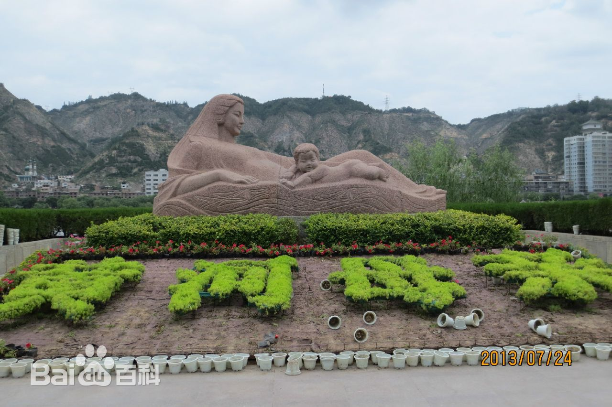

黄河母亲
石质雕塑，位于兰州市黄河南岸的滨河路中段、小西湖公园北侧，长6米，宽2.2米，高
2.6米，总重40余吨，是目前全国诸多表现中华民族的母亲河——黄河的雕塑艺术品中最具艺术价值的。作品由"母亲"和"男婴"组成构图，分别象征了黄河母亲和华夏子孙。作品在全国首届城市雕塑方案评比中获优秀奖。“黄河母亲”现已经成为兰州的标志性雕塑，也代表着兰州形象。作者何鄂，甘肃著名的雕塑家。
“黄河母亲”雕塑，位于兰州市黄河南岸的滨河路中段、小西湖公园北侧，是目前全国诸多表现中华民族的母亲河——黄河的雕塑艺术品中最漂亮的一尊。具有很高的艺术价值，在全国首届城市雕塑方案评比中曾获优秀奖。
雕塑由甘肃著名的雕塑家何鄂女士创作，整体造型是一位神态娴雅的母亲侧卧黄河岸边，看护着怀抱中游泳的幼儿的情景。分别象征了哺育中华民族生生不息、不屈不挠的黄河母亲，和快乐幸福、茁壮成长的华夏子孙。黄河母亲秀发飘拂，神态慈祥，身躯颀长匀称，曲线优美，微微含笑，抬头微曲右臂，仰卧于波涛之上，右侧依偎着一裸身男婴，头微左顾，举首憨笑，显得顽皮可爱。雕塑构图洗练，寓意深刻，雕塑下基座上刻有水波纹和鱼纹图案，源自甘肃古老彩陶的原始图案。该雕塑构图简洁，寓意深刻，反映了甘肃悠远的历史文化。
